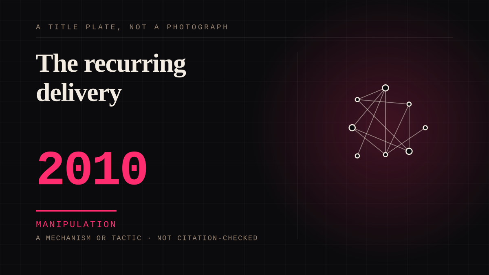

A mechanism or tactic · 2010 · Retail
The recurring delivery
A monthly box of chosen items, an unboxing ritual, and a personal recommendation from somebody with taste.

The clerk behind a counter, automated and shipped monthly. The whole appeal is that a person chose this for you, and the whole trick is that the choice was made by a recommendation system.
Manipulation. One-sided attachment engineered for somebody else's benefit. Paid intimacy, parasocial persuasion, sasaeng, grief extraction, the streak. The lane that pays the bills and the lane that causes the most harm, frequently at the same time.
Where it sits
2010 2010+ · 2010 2026
Provenance · 7 source record(s)
- retrievableTHE ENTRY'S MECHANISM, MEASURED. A controlled experiment (n=144) found unboxing COMPLEXITY has a main effect on positive affect (beta=.53, p=.020), and that positive affect in turn significantly increases willingness to share, online and off. The ritual is the productBerden, C. Thinking inside the box: the effect of the unboxing experience on positive affect and willingness to share (University of Twente MSc thesis). ↗
- unverifiedThe scale of the ritual: an estimated 2.35 MILLION unboxing videos of the iPhone 6 were uploaded to YouTube in 2014, and about a quarter of a million were dedicated to a single subscription box brand. Unboxing became a genre with an audienceBerden, Thinking inside the box, citing Bayston (2016).
- unverifiedAnd it is treated as engineering, not whimsy: Apple designer Jonathan Ives on the practice - 'You design a ritual of unpacking to make the product feel special. Packaging can be theatre, it can create a story' - and the company tests hundreds of package designs in a dedicated unboxing roomBerden, Thinking inside the box, citing Forbes (2014) and Mashable (2012).
- retrievableTHE PART THAT IS ACTUALLY DISTURBING. An eye-tracking lab experiment found personalization improves the customer experience EVEN WHEN THE CUSTOMER DOES NOT PERCEIVE IT. Actual personalization shifts objective behaviour - attention concentrates on favoured products and they are more likely to be selected - while only perceived personalization moves subjective feelingsPersonalization and playful customer experience, with eye-tracking (Universite catholique de Louvain). ↗
- retrievableThe recommendation is the relationship: participants in a 2025 study emphasised the stylist or curator as the thing delivering the value, with algorithms used in the stylist's absence. Stylists keep notes, reference past purchases, and are trusted with items the subscriber says they would never have chosenBhatt, D. (2025). Consumers' perceptions towards subscription retail: a focus on online fashion box services. ↗
- unverifiedAnd what participants named as the risks, unprompted: inability to opt out when not using the service, the time cost of interacting with a stylist, and the environmental cost of packaging and shipping. The convenience and the exit are the same design decisionBhatt (2025), citing Tao & Xu (2017).
- retrievableThe shape of the relationship, named from 26 in-depth interviews: a subscription box journey has three stages - INITIATION, IMMERSION and EGRESS - each adding to or subtracting from utilitarian and hedonic value. Renewal and cancellation are stages of the same stream, not opposite decisionsAlba, J. W. Navigating consumption streams: Toward a utilitarian-hedonic perspective on subscription box customer journeys. Journal of Consumer Behaviour. ↗
Connected · 2 out, 3 in
The dark pattern in the loyalty cardcites · 2010 · A term or conceptPaid intimacycites · 2010 · A mechanism or tacticThe dark pattern in the loyalty cardcites · 2010 · A term or conceptThe free trialcites · 2015 · A mechanism or tacticPaid intimacycites · 2010 · A mechanism or tactic
Reported as a story
YouTube added paid membership spaces and is fighting Patreon for themThe platform that built the parasocial relationship is now selling a room inside it.Everyone is renting everybody's audience nowTwitch reopens a ban, Netflix finds 1 in 6 YouTube users subscribes, and everyone admitted it in the same week.
It sits in